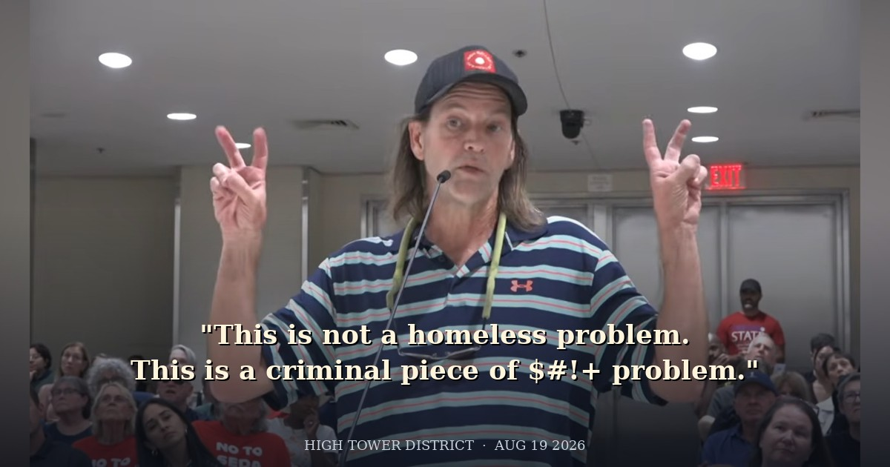

The loaded label is homeless.
It rinses the verb off the noun. Dumping in a canal becomes a housing status. A break-in becomes a condition. Grift on child-serving money becomes compassion. The statute stays on the books. The microphone pretends the statute is rude.
I did not take that microphone on August 19 to audition for a seat. I took it because unused law is a signal, and because I will not put my name on a ticket next to people I treat as predators of general public safety.
The outside is the point. Expose them from the sidewalk and the official tape. Do not warranty them with a ballot line.

Tape 4
Tape 4 · Loaded label: homeless
Aaron Hightower · Planning Commission · August 19, 2026
Start: 1:49:12 · Listen: about 2 minutes
Listen for homelessness treated as crime and grift, unused canal-litter law, broken windows, whistleblow or go down. That is the cut.


What the unused law actually is
California Penal Code 374.7 is not a vibe. Litter or dump waste into a canal, slough, river, or within 150 feet of the high-water mark and it is a misdemeanor. First conviction: mandatory fine. Repeat it and the fine climbs. A court can add litter pickup.
The laterals behind this district are not mysterious. What is mysterious is a government that can see the trash and still speak as if no written law exists.
Unused law is not mercy. Unused law is a signal. Predators read signals. So do the people who turn services into a billing machine.


Why I stepped off the ticket
I dropped District 3 because I will not stamp my name on a cracked part. Once you stand on a ballot next to a culture, your name becomes part of the warranty. I declined the warranty.
Rene Campos ran for District 7 as a registered sex offender after a 2018 conviction tied to possessing child sexual abuse material. That is Penal Code 311.11 territory. The County Clerk said state law still let him run. In March 2026 the Council voted 7-0 to support a state bill barring registered sex offenders from holding office after one of them sat in chambers while schoolchildren walked the room.
Some steal lunch money appropriated for children. Some steal a child's image. Some steal a man's name with a racism charge they did not verify. The statutes differ. The contempt for the protected class is the same.
I will work the outside to expose that contempt. I will not sit on a ticket that requires me to smile next to it.
The racism charge that did not survive the son
Keshia Thomas. Fresno Unified trustee. District 3 runoff against Joaquin Arambula.
May 17, 2022, GV Wire Unfiltered: she said her middle son went to football practice where he has Arax calling him the racial epithet, then left Bullard for Edison.
Don Arax denied it and sued her and the district for defamation. Public reporting put the combined legal spend near $370,000.
July 27, 2026: her son, Albert Alford Jr., filed a sworn declaration that the 2013 incident wasn't true and that he never told his mother Arax used the slur.
August 17: Fresno Teachers Association called for her resignation. She issued a formal apology. She refused to resign. Trial: December 7, 2026.
A mother can be lied to. A public official still owes due diligence before she uses the most destructive racial charge in American life against a named employee on a recorded show. If the first speaker is a child, the adult who carries the charge into the public square owns the verification.
That is how fraud survives. Not only with fake invoices. With a moral tripwire that detonates inspection. Homeless does the same job on a canal. Racism does the same job on a name.

The position
Public safety is not a vibe. Child-serving money is not a community mascot. Unused statutes are not mercy. Homeless is not a get-out-of-the-Penal-Code card.
Minnesota already ran the experiment on child-nutrition theft. Federal prison is what impunity looks like after the story dies. Feeding Our Future. Bock, 500 months. An organizer walked back from Mogadishu.
I will not share a ballot with people I regard as predators of general public safety. I will name them from the outside.
Whistleblow. Or go down with the people who thought the lobby was safer than the record.
High Tower District
721 E La Sierra · Fresno · 93728
Document. Display. Enforce.
Record
City of Fresno Planning Commission, Aug. 19, 2026, official YouTube, 1:49:12. Cal. Penal Code 374.7 and 311.11. U.S. Attorney, District of Minnesota, Feeding Our Future 2026. Fresno Bee / FTA / SJV Sun on Thomas, Alford Jr., apology, trial. ABC30 on Campos and the 7-0 chambers vote. Canal and porch photographs from the High Tower District daily record. Dais still from the official meeting video.